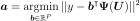

PenalizedLeastSquaresAlgorithm¶
- class PenalizedLeastSquaresAlgorithm(*args)¶
Penalized least squares algorithm.
Refer to Least squares problems numerical methods.
- Available constructors:
PenalizedLeastSquaresAlgorithm(x, y, psi, indices, penalizationFactor=0, useNormal=False)
PenalizedLeastSquaresAlgorithm(x, y, weight, psi, indices, penalizationFactor=0, useNormal=False)
PenalizedLeastSquaresAlgorithm(x, y, weight, psi, indices, penalizationFactor=0, penalizationMatrix, useNormal=False)
- Parameters
- x
Sample Input sample
- y
Sample Output sample
- weightsequence of float
Output weights
- psisequence of
Function Basis
- indicessequence of int
Indices allowed in the basis
- penalizationFactorfloat, optional
Penalization factor
- penalizationMatrix2-d sequence of float
Penalization matrix
- useNormalbool, optional
Solve the normal equation
- x
Notes
Solve the least-squares problem:

Methods
Accessor to the object's name.
Accessor to the coefficients.
getId()Accessor to the object's id.
getName()Accessor to the object's name.
getPsi()Accessor to the basis.
Accessor to the coefficients.
Accessor to the coefficients.
Accessor to the object's shadowed id.
Accessor to the verbosity flag.
Accessor to the object's visibility state.
Accessor to the weights.
getX()Accessor to the input sample.
getY()Accessor to the output sample.
hasName()Test if the object is named.
Test if the object has a distinguishable name.
run()Run the algorithm.
setName(name)Accessor to the object's name.
setShadowedId(id)Accessor to the object's shadowed id.
setVerbose(verbose)Accessor to the verbosity flag.
setVisibility(visible)Accessor to the object's visibility state.
- __init__(*args)¶
- getClassName()¶
Accessor to the object’s name.
- Returns
- class_namestr
The object class name (object.__class__.__name__).
- getId()¶
Accessor to the object’s id.
- Returns
- idint
Internal unique identifier.
- getName()¶
Accessor to the object’s name.
- Returns
- namestr
The name of the object.
- getRelativeError()¶
Accessor to the coefficients.
- Returns
- relativeErrorfloat
The relative error
- getResidual()¶
Accessor to the coefficients.
- Returns
- coefficientsfloat
The residual
- getShadowedId()¶
Accessor to the object’s shadowed id.
- Returns
- idint
Internal unique identifier.
- getVerbose()¶
Accessor to the verbosity flag.
- Returns
- vbool.
Verbosity
- getVisibility()¶
Accessor to the object’s visibility state.
- Returns
- visiblebool
Visibility flag.
- hasName()¶
Test if the object is named.
- Returns
- hasNamebool
True if the name is not empty.
- hasVisibleName()¶
Test if the object has a distinguishable name.
- Returns
- hasVisibleNamebool
True if the name is not empty and not the default one.
- run()¶
Run the algorithm.
- setName(name)¶
Accessor to the object’s name.
- Parameters
- namestr
The name of the object.
- setShadowedId(id)¶
Accessor to the object’s shadowed id.
- Parameters
- idint
Internal unique identifier.
- setVerbose(verbose)¶
Accessor to the verbosity flag.
- Parameters
- vbool
Enable or disable the verbosity.
- setVisibility(visible)¶
Accessor to the object’s visibility state.
- Parameters
- visiblebool
Visibility flag.